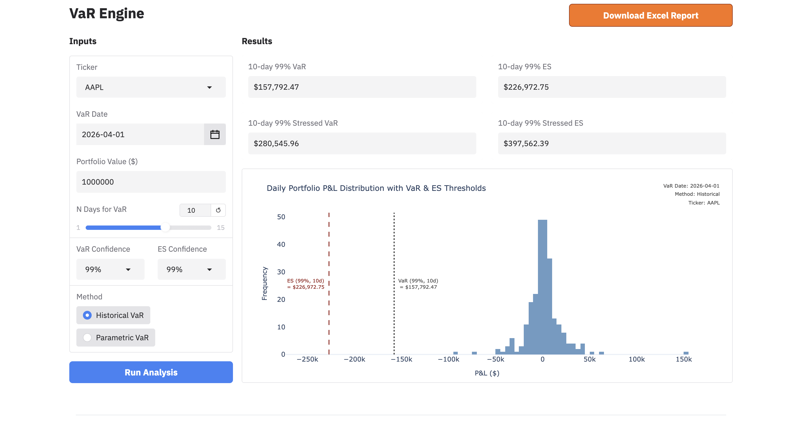
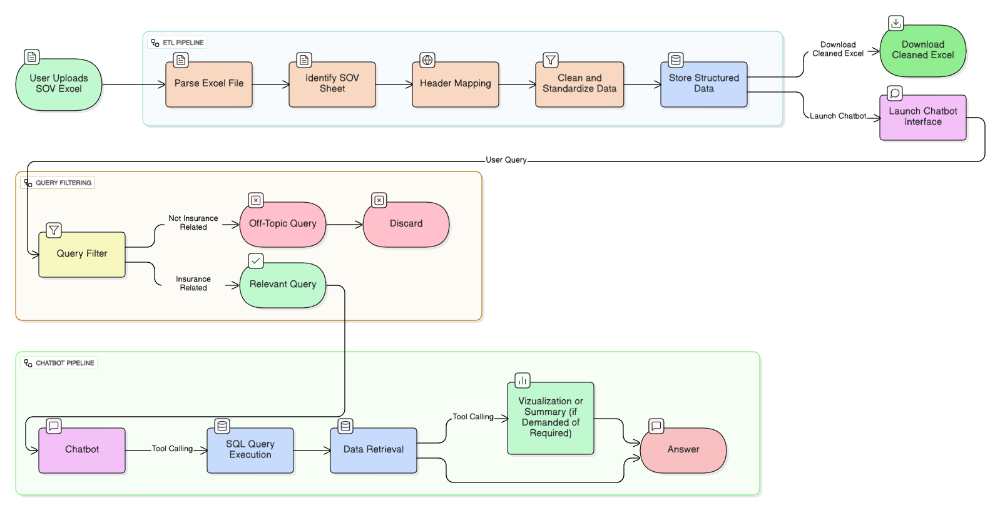
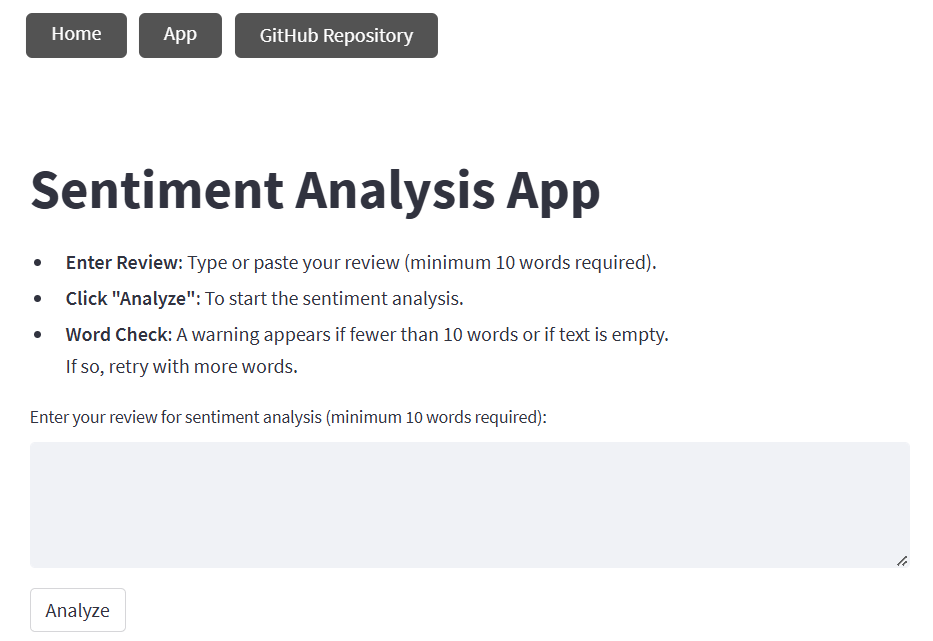
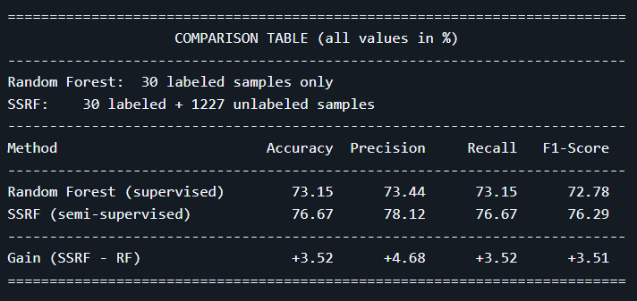
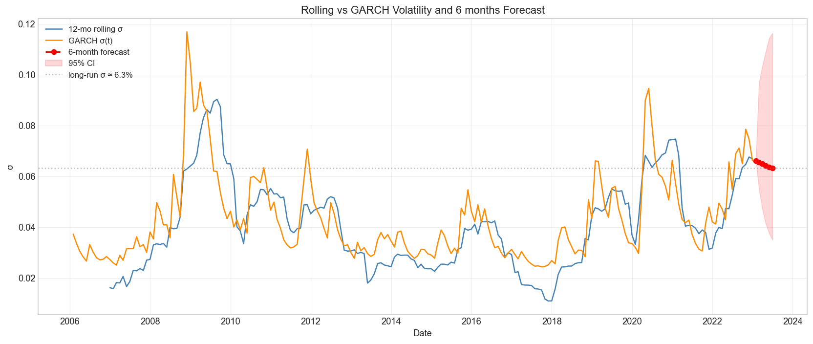

Key Projects


SOV Chatbot for Underwriters
Built a RAG chatbot with tool-calling functionality to generate visualization for along with insights for SOV analysis Engineered an automated data pipeline to extract, clean, and standardize Statement-of-Value (SoV) Excels Fine-tuned BERT classifier (99.54% F1) on a custom dataset to filter non-insurance queries
- Python
- LangChain
- Pytorch
- SQL
- DistilBERT
Click to view details →

End-to-End Review Sentiment Analysis
An web app for sentiment analysis, featuring data cleaning, model training, and deployment
- Python
- PyTorch
- NLTK
- Streamlit
- Docker

Semi-Supervised Random Forest
Reproduced semi-supervised Random Forest paper and imporved it by adding an inverse cooling function to adjust how pseudo-labels are used during training.
- Python
- Pandas
- scikit-learn
- Semi-Supervised Learning

Time Series Modeling of S&P 500 Returns
Modeled S&P 500 ETF monthly log returns using ARIMA and GARCH to forecast conditional volatility and capture volatility clustering.
- Python
- Statsmodels
- Time Series
- ARIMA
- GARCH

Bank Customer Segmentation Project
Explores multivariate analysis technique like PCA, clustering, and factor analysis to reveal real-world insights.
- Python
- Pandas
- Scipy
- scikit-learn
- Clustering